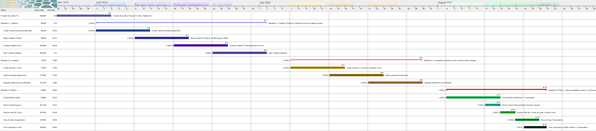

Career Goals & Vision
I dream of being an inclusive and values-driven engineering leader who values innovation, diversity, and continuous improvement. I aim to build high-performing teams that solve complex problems and create impactful solutions.
My mission is to lead with integrity, foster trust, and empower others to thrive through servant leadership.
Systems Thinking Toolkit
This section includes visual tools and models that guide my decision-making based on systems thinking. These models help analyze feedback loops, delays, and leverage points in engineering problems.
- 🧠Causal Loop Diagram
- 🔠Stock & Flow Model
- ⚙️ Root Cause Tree
Based on Senge’s systems thinking model (Senge, 2006).
Team Communication & Feedback Strategy
I prioritize proactive communication across remote and in-person teams. Strategies include:
- 📅 Weekly Syncs via Zoom or Teams
- 📠Real-time shared documentation
- 📊 Agile retrospectives for continuous feedback
- 🯠Conflict resolution using active listening and shared goals
Project Timeline
This Gantt chart outlines the phases and milestones of my ELR Web Portfolio.
Cultural Adaptation & Ethical Engineering
I am committed to ethical and inclusive leadership in engineering. Key practices include:
- ⚖️ Applying professional codes of ethics (e.g., NSPE)
- 🌠Adapting to U.S. workplace culture while respecting global diversity
- 🧠Decision-making guided by ethical frameworks
This section also includes reflections on personal ethical dilemmas and how I resolved them.
Contact & Résumé
📧 Email: youremail@example.com
🔗 LinkedIn: Visit my profile
📄 Résumé: Download PDF